Chapter 8 · Part 1 — The Mummy
A real .
Bandages were still wrapped around the bald skull. But most of the bandages had come off the face.
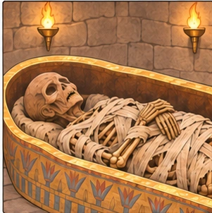
It was Hutepi. of the Nile.
Her broken teeth were showing. Her little wrinkled ears. Her squashed nose. Her withered flesh. Her hollow eye sockets.
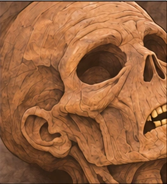
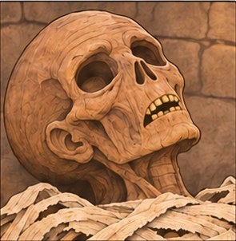
Plus the rotting bandages on her body were coming off. You could see bones.
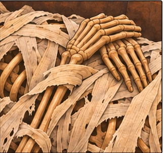
“Oh, gross!” cried Annie. “Let’s go!”
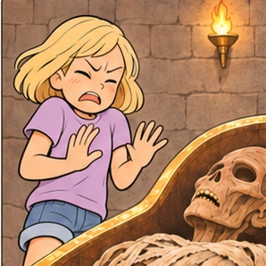
“No,” said Jack. “It’s interesting.”
“Forget it!” said Annie. She started out of the room.
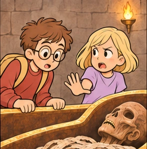
“Wait, Annie.”
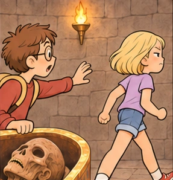
“Come on, Jack. Hurry!” cried Annie. She was standing by the door.
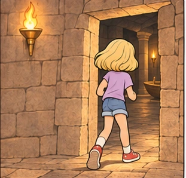
Jack pulled out the Egypt book and flipped to a picture of a . He read aloud:
Ancient Egyptians tried to protect the body so it would last forever. First it was dried out with salt.
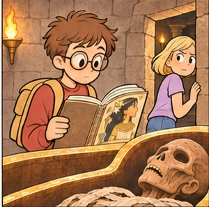
“Ugh, stop!” said Annie.
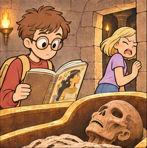
“Listen,” said Jack. He kept reading:
Next it was covered with oil. Then it was wrapped tightly in bandages. The brain was removed by—
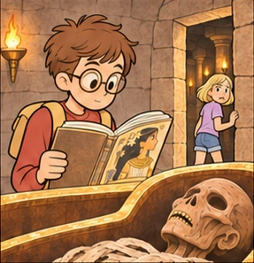
“Yuck! Stop!” cried Annie. “Good-bye!” She dashed out of the room.
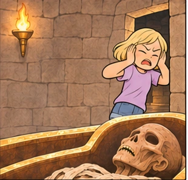
“Annie!” called Jack. “We have to give her the Book of the Dead!”
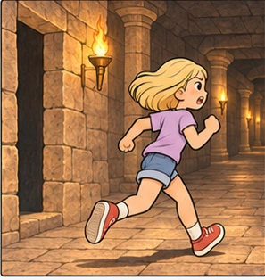
But Annie was gone.
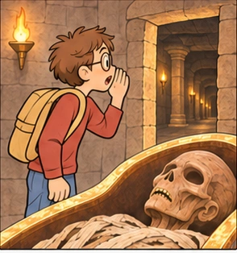
Jack reached into his pack. He pulled out the and the scepter. He put them next to the ’s skull.
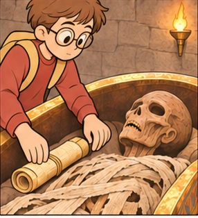
Was it just his imagination? Or did a deep sigh seem to shudder throughout the room? Did the ’s face grow calmer?
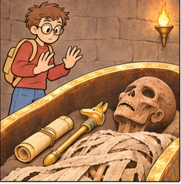
Jack held his breath as he backed away. Out of the room. Out of the boat room. Down the stairs.
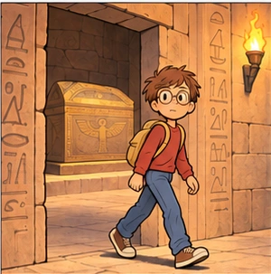
At the bottom of the stairs, he heaved his own sigh. A sigh of relief.
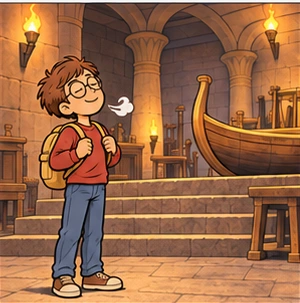
He looked down the hallway. It was empty.
“Hey! Where are you?” he said.
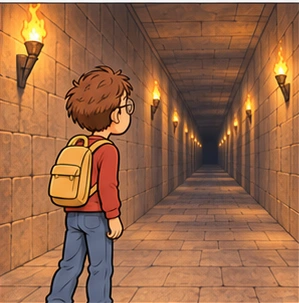
No answer.
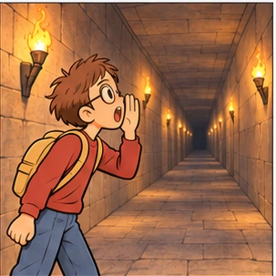
Where in the world was Annie?
Jack started down the hallway.
“Annie!” he called.
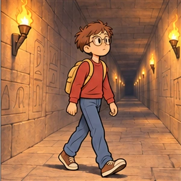
Had she run out of the ? Was she already outside?
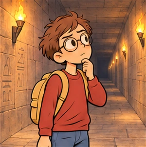
“Annie!”
“Help, Jack!” came a cry. The voice sounded far away.
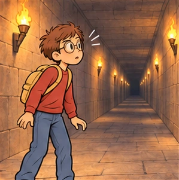
It was Annie! Where was she?
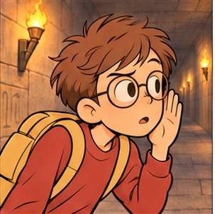
“Help, Jack!”
“Annie!”
Jack started to run. Along the shadowy hallway.
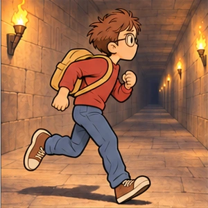
“Help, Jack!” Her cry seemed fainter.
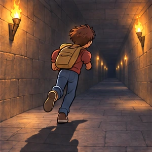
Jack stopped.
He was running away from her voice.
“Annie!” he called. He went back toward the burial chambers.
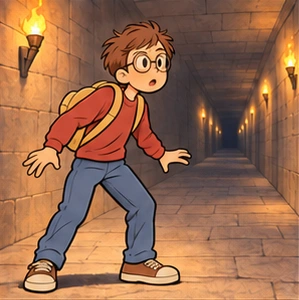
“Jack!”
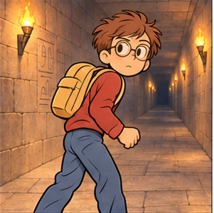
There! Her voice was louder.
“Jack!”
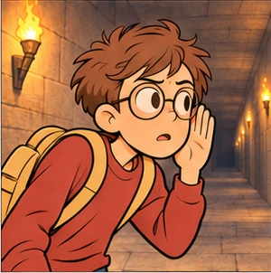
Even louder!
Jack climbed the stairs. He went back into the boat room.
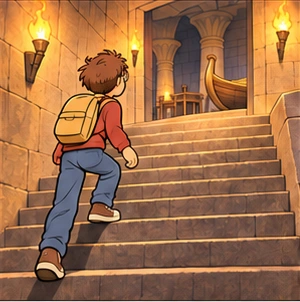
He looked around the room. At the furniture. The musical instruments. The boat.
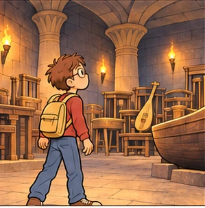
Then he saw it. Another door! Right next to the door he had just come through.
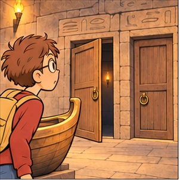
The other door was open.
Jack dashed through it. He found himself at the top of some stairs.
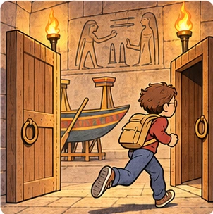
They were just like the stairs in the other hallway.
He went down into the hallway. It was lit by torches on the wall.
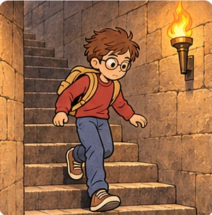
It was just like the other hallway.
“Annie!” he called.
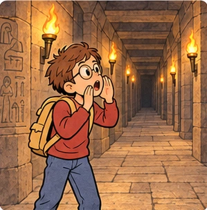
“Jack!”
“Annie!”
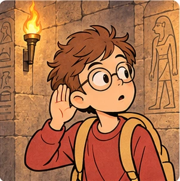
“Jack!”
She was running through the hallway toward him.
She crashed into him.
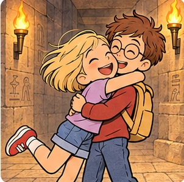
“I was lost!” she cried.
“I think this is one of those false passages. Built to fool the robbers,” said Jack.
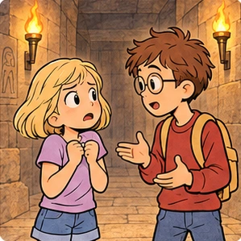
“A false ?” said Annie, panting.
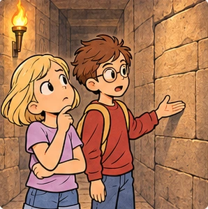
“Yeah, it looks just like the right hallway,” said Jack. “We have to go back into the boat room. And out the right door.”
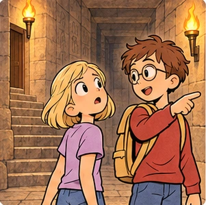
Just then they heard a creaking noise.
Jack and Annie turned around. They looked up the stairs.
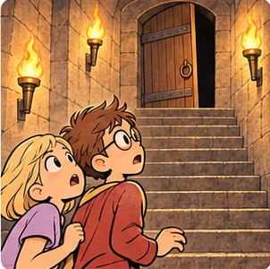
Then they watched in horror as the door slowly creaked shut.
A deep sound rumbled in the distance. And all the torches went out.
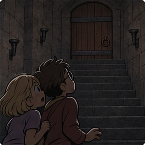